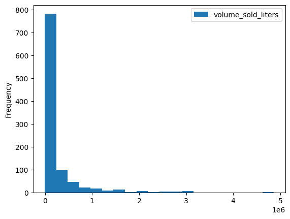
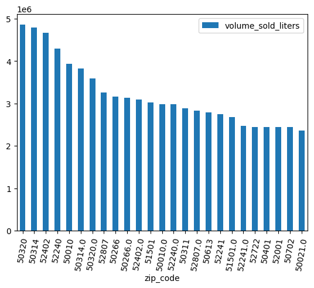
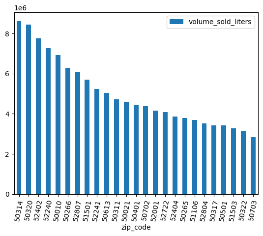
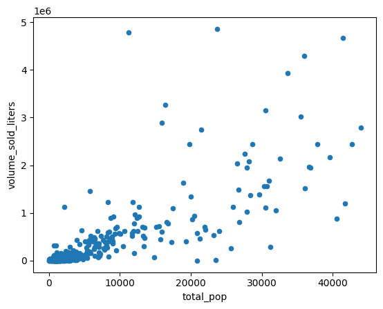
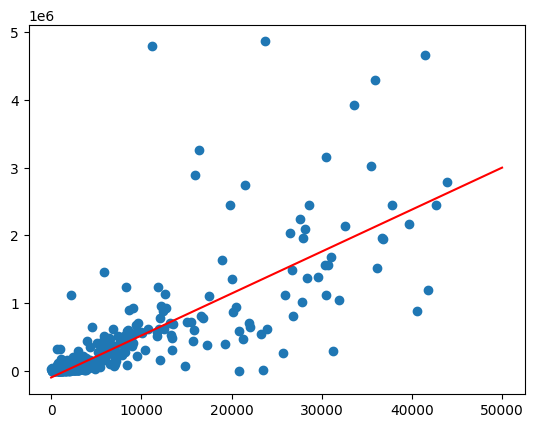
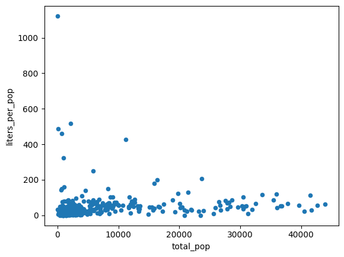
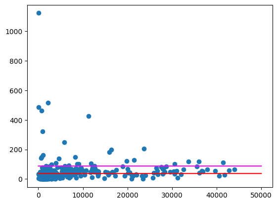
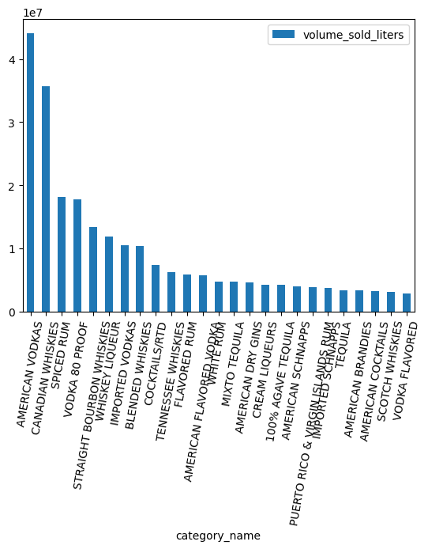
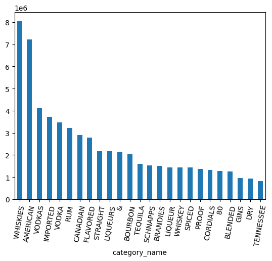
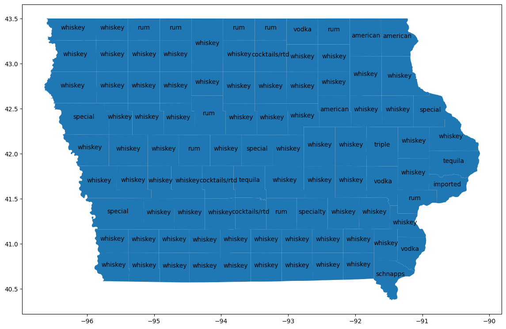

In this lab, you will use BigQuery DataFrames from a Python notebook in BigQuery Studio to clean and analyze the Iowa liquor sales public dataset. Make use of BigQuery ML and remote function capabilities to discover insights.
You will create a Python notebook to compare sales across geographic areas. This can be adapted to work on any structured data.
In this lab, you learn how to perform the following tasks:
To follow the instructions in this codelab, you'll need a Google Cloud Project with BigQuery Studio enabled and a connected billing account.
Create an empty notebook and connect it to a runtime.
%pip install --upgrade bigframes --quiet
Initialize the BigQuery DataFrames package by running the following in a new code cell:
import bigframes.pandas as bpd
bpd.options.bigquery.ordering_mode = "partial"
bpd.options.display.repr_mode = "deferred"
Note: in this tutorial, we use the experimental "partial ordering mode", which allows for more efficient queries when used with pandas-like filtering. Some pandas features that require a strict ordering or index may not work.
Check your bigframes package version with
bpd.__version__
This tutorial requires version 1.27.0 or later.
The Iowa liquor retail sales dataset is provided on BigQuery through Google Cloud's public dataset program. This dataset contains every wholesale purchase of liquor in the State of Iowa by retailers for sale to individuals since January 1, 2012. Data are collected by the Alcoholic Beverages Division within the Iowa Department of Commerce.
In BigQuery, query the bigquery-public-data.iowa_liquor_sales.sales. to analyze the Iowa liquor retail sales. Use the bigframes.pandas.read_gbq() method to create a DataFrame from a query string or table ID.
Run the following in a new code cell to create a DataFrame named "df":
df = bpd.read_gbq_table("bigquery-public-data.iowa_liquor_sales.sales")
Use the DataFrame.peek() method to download a small sample of the data.
Run this cell:
df.peek()
Expected output:
index invoice_and_item_number date store_number store_name ...
0 RINV-04620300080 2023-04-28 10197 SUNSHINE FOODS / HAWARDEN
1 RINV-04864800097 2023-09-25 2621 HY-VEE FOOD STORE #3 / SIOUX CITY
2 RINV-05057200028 2023-12-28 4255 FAREWAY STORES #058 / ORANGE CITY
3 ...
Note: head() requires ordering and is generally less efficient than peek() if you want to visualize a sample of data.
Just as with pandas, use the DataFrame.dtypes property to see all available columns and their corresponding data types. These are exposed in a pandas-compatible way.
Run this cell:
df.dtypes
Expected output:
invoice_and_item_number string[pyarrow]
date date32[day][pyarrow]
store_number string[pyarrow]
store_name string[pyarrow]
address string[pyarrow]
city string[pyarrow]
zip_code string[pyarrow]
store_location geometry
county_number string[pyarrow]
county string[pyarrow]
category string[pyarrow]
category_name string[pyarrow]
vendor_number string[pyarrow]
vendor_name string[pyarrow]
item_number string[pyarrow]
item_description string[pyarrow]
pack Int64
bottle_volume_ml Int64
state_bottle_cost Float64
state_bottle_retail Float64
bottles_sold Int64
sale_dollars Float64
volume_sold_liters Float64
volume_sold_gallons Float64
dtype: object
The DataFrame.describe() method queries some basic statistics from the DataFrame. Run DataFrame.to_pandas() to download these summary statistics as a pandas DataFrame.
Run this cell:
df.describe("all").to_pandas()
Expected output:
invoice_and_item_number date store_number store_name ...
nunique 30305765 <NA> 3158 3353 ...
std <NA> <NA> <NA> <NA> ...
mean <NA> <NA> <NA> <NA> ...
75% <NA> <NA> <NA> <NA> ...
25% <NA> <NA> <NA> <NA> ...
count 30305765 <NA> 30305765 30305765 ...
min <NA> <NA> <NA> <NA> ...
50% <NA> <NA> <NA> <NA> ...
max <NA> <NA> <NA> <NA> ...
9 rows × 24 columns
The Iowa liquor retail sales dataset provides fine-grained geographic information, including where the retail stores are located. Use these data to identify trends and differences across geographic areas.
There are several built-in visualization methods such as DataFrame.plot.hist(). Use this method to compare liquor sales by ZIP code.
volume_by_zip = df.groupby("zip_code").agg({"volume_sold_liters": "sum"})
volume_by_zip.plot.hist(bins=20)
Expected output:

Use a bar chart to see which zip colds sold the most alcohol.
(
volume_by_zip
.sort_values("volume_sold_liters", ascending=False)
.head(25)
.to_pandas()
.plot.bar(rot=80)
)
Expected output:

Some ZIP codes have a trailing .0. Possibly somewhere in the data collection the ZIP codes were accidentally converted into floating point values. Use regular expressions to clean up the ZIP codes and repeat the analysis.
df = (
bpd.read_gbq_table("bigquery-public-data.iowa_liquor_sales.sales")
.assign(
zip_code=lambda _: _["zip_code"].str.replace(".0", "")
)
)
volume_by_zip = df.groupby("zip_code").agg({"volume_sold_liters": "sum"})
(
volume_by_zip
.sort_values("volume_sold_liters", ascending=False)
.head(25)
.to_pandas()
.plot.bar(rot=80)
)
Expected output:

Why do some zip codes sell more than others? One hypothesis is that it's due to population size differences. A zip code with more population will likely sell more liquor.
Test this hypothesis by calculating the correlation between population and liquor sales volume.
Join with a population dataset such as the US Census Bureau's American Community Survey ZIP code tabulation area survey.
census_acs = bpd.read_gbq_table("bigquery-public-data.census_bureau_acs.zcta_2020_5yr")
The American Community Survey identifies states by GEOID. In the case of ZIP code tabulation areas, the GEOID equals the ZIP code.
volume_by_pop = volume_by_zip.join(
census_acs.set_index("geo_id")
)
Create a scatter plot to compare ZIP code tabulation area populations with liters of alcohol sold.
(
volume_by_pop[["volume_sold_liters", "total_pop"]]
.to_pandas()
.plot.scatter(x="total_pop", y="volume_sold_liters")
)
Expected output:

The trend looks roughly linear. Fit a linear regression model to this to check how well population can predict liquor sales.
from bigframes.ml.linear_model import LinearRegression
feature_columns = volume_by_pop[["total_pop"]]
label_columns = volume_by_pop[["volume_sold_liters"]]
# Create the linear model
model = LinearRegression()
model.fit(feature_columns, label_columns)
Check how good the fit is by using the score method.
model.score(feature_columns, label_columns).to_pandas()
Expected output:
mean_absolute_error mean_squared_error mean_squared_log_error median_absolute_error r2_score explained_variance
0 245065.664095 224398167097.364288 5.595021 178196.31289 0.380096 0.380096
Draw the best fit line but calling the predict function on a range of population values.
import matplotlib.pyplot as pyplot
import numpy as np
import pandas as pd
line = pd.Series(np.arange(0, 50_000), name="total_pop")
predictions = model.predict(line).to_pandas()
zips = volume_by_pop[["volume_sold_liters", "total_pop"]].to_pandas()
pyplot.scatter(zips["total_pop"], zips["volume_sold_liters"])
pyplot.plot(
line,
predictions.sort_values("total_pop")["predicted_volume_sold_liters"],
marker=None,
color="red",
)
Expected output:

The data in the previous chart appears to be heteroscedastic. The variance around the best fit line grows with the population.
Perhaps the amount of alcohol purchased per person is relatively constant.
volume_per_pop = (
volume_by_pop[volume_by_pop['total_pop'] > 0]
.assign(liters_per_pop=lambda df: df["volume_sold_liters"] / df["total_pop"])
)
(
volume_per_pop[["liters_per_pop", "total_pop"]]
.to_pandas()
.plot.scatter(x="total_pop", y="liters_per_pop")
)
Expected output:

Calculate the average liters of alcohol purchased in two different ways:
In (1), it reflects how much alcohol is purchased in the whole state. In (2), it reflects the average zip code, which won't necessarily be the same as (1) because different zip codes have different populations.
df = bpd.read_gbq_table("bigquery-public-data.iowa_liquor_sales.sales")
census_state = bpd.read_gbq(
"bigquery-public-data.census_bureau_acs.state_2020_5yr",
index_col="geo_id",
)
volume_per_pop_statewide = (
df['volume_sold_liters'].sum()
/ census_state["total_pop"].loc['19']
)
volume_per_pop_statewide
Expected output: 87.997
average_per_zip = volume_per_pop["liters_per_pop"].mean()
average_per_zip
Expected output: 37.468
Plot these averages, similar to above.
import numpy as np
import pandas as pd
from matplotlib import pyplot
line = pd.Series(np.arange(0, 50_000), name="total_pop")
zips = volume_per_pop[["liters_per_pop", "total_pop"]].to_pandas()
pyplot.scatter(zips["total_pop"], zips["liters_per_pop"])
pyplot.plot(line, np.full(line.shape, volume_per_pop_statewide), marker=None, color="magenta")
pyplot.plot(line, np.full(line.shape, average_per_zip), marker=None, color="red")
Expected output:

There are still some zip codes that are quite large outliers, especially in areas with less population. It is left as an exercise to hypothesize why this is. For example, it could be that some zip codes are low population but high consumption because they contain the only liquor store in the area. If so, calculating based the population of surrounding zip codes may even these outliers out.
In addition to geographic data, the Iowa liquor retail sales database also contains detailed information about the item sold. Perhaps by analyzing these, we can reveal differences in tastes across geographic areas.
Items are categorized in the database. How many categories are there?
import bigframes.pandas as bpd
bpd.options.bigquery.ordering_mode = "partial"
bpd.options.display.repr_mode = "deferred"
df = bpd.read_gbq_table("bigquery-public-data.iowa_liquor_sales.sales")
df.category_name.nunique()
Expected output: 103
Which are the most popular categories by volume?
counts = (
df.groupby("category_name")
.agg({"volume_sold_liters": "sum"})
.sort_values(["volume_sold_liters"], ascending=False)
.to_pandas()
)
counts.head(25).plot.bar(rot=80)

There are several categories each of whiskey, rum, vodka, and more. I'd like to group these together somehow.
Start by splitting the category names into separate words by using the Series.str.split() method. Unnest the array this creates by using the explode() method.
category_parts = df.category_name.str.split(" ").explode()
counts = (
category_parts
.groupby(category_parts)
.size()
.sort_values(ascending=False)
.to_pandas()
)
counts.head(25).plot.bar(rot=80)

category_parts.nunique()
Expected output: 113
Looking at the chart above, the data still have VODKA separate from VODKAS. More grouping is needed to collapse categories into a smaller set.
With only about 100 categories, it would be feasible to write some heuristics or even manually create a mapping from category to the wider liquor type. Alternatively, one could use a large language model such as Gemini to create such a mapping. Try the codelab Get insights from unstructured data using BigQuery DataFrames to use BigQuery DataFrames with Gemini.
Instead, use a more traditional natural language processing package, NLTK, to process these data. Technology called a "stemmer" can merge plural and singular nouns into the same value, for example.
Click the arrow in BigQuery Studio's tabbed editor and select Create new Python notebook.
The NLTK package provides natural language processing methods that are accessible from Python. Install the package to try it out.
%pip install nltk
Next, import the package. Inspect the version. It will be used later on in the tutorial.
import nltk
nltk.__version__
One way of standardizing words to "stem" the word. This removes any suffixes, as a trailing "s" for plurals.
def stem(word: str) -> str:
# https://www.nltk.org/howto/stem.html
import nltk.stem.snowball
# Avoid failure if a NULL is passed in.
if not word:
return word
stemmer = nltk.stem.snowball.SnowballStemmer("english")
return stemmer.stem(word)
Try this out on a few words.
stem("WHISKEY")
Expected output: whiskey
stem("WHISKIES")
Expected output: whiski
Unfortunately, this didn't map whiskies to the same as whiskey. Stemmers don't work well with irregular plurals. Try a lemmatizer, which uses more sophisticated techniques to identify the base word, called a "lemma".
def lemmatize(word: str) -> str:
# https://stackoverflow.com/a/18400977/101923
# https://www.nltk.org/api/nltk.stem.wordnet.html#module-nltk.stem.wordnet
import nltk
import nltk.stem.wordnet
# Avoid failure if a NULL is passed in.
if not word:
return word
nltk.download('wordnet')
wnl = nltk.stem.wordnet.WordNetLemmatizer()
return wnl.lemmatize(word.lower())
Try this out on a few words.
lemmatize("WHISKIES")
Expected output: whisky
lemmatize("WHISKY")
Expected output: whisky
lemmatize("WHISKEY")
Expected output: whiskey
Unfortunately, this lemmatizer doesn't map "whiskey" to the same lemma as "whiskies". Since this word is particularly important for the Iowa retail liquor sales database, manually map it to the American spelling by using a dictionary.
def lemmatize(word: str) -> str:
# https://stackoverflow.com/a/18400977/101923
# https://www.nltk.org/api/nltk.stem.wordnet.html#module-nltk.stem.wordnet
import nltk
import nltk.stem.wordnet
# Avoid failure if a NULL is passed in.
if not word:
return word
nltk.download('wordnet')
wnl = nltk.stem.wordnet.WordNetLemmatizer()
lemma = wnl.lemmatize(word.lower())
table = {
"whisky": "whiskey", # Use the American spelling.
}
return table.get(lemma, lemma)
Try this out on a few words.
lemmatize("WHISKIES")
Expected output: whiskey
lemmatize("WHISKEY")
Expected output: whiskey
Congrats! This lemmatizer should work well for narrowing the categories. To use it with BigQuery, you must deploy it to the cloud.
Before you deploy this to the cloud so that BigQuery can access this function, you'll need to do some one time setup.
Create a new code cell and replace your-project-id with the Google Cloud project ID you're using for this tutorial.
project_id = "your-project-id"
Create a service account without any permissions, since this function doesn't need access to any cloud resources.
from google.cloud import iam_admin_v1
from google.cloud.iam_admin_v1 import types
iam_admin_client = iam_admin_v1.IAMClient()
request = types.CreateServiceAccountRequest()
request.account_id = account_id
request.name = f"projects/{project_id}"
account_id = "bigframes-no-permissions"
display_name = "bigframes remote function (no permissions)"
service_account = types.ServiceAccount()
service_account.display_name = display_name
request.service_account = service_account
account = iam_admin_client.create_service_account(request=request)
print(account.email)
Expected output: bigframes-no-permissions@your-project-id.iam.gserviceaccount.com
Create a BigQuery dataset to hold the function.
from google.cloud import bigquery
bqclient = bigquery.Client(project=project_id)
dataset = bigquery.Dataset(f"{project_id}.functions")
bqclient.create_dataset(dataset, exists_ok=True)
Now, deploy your function to the dataset you just created. Add a @bpd.remote_function decorator to the function you created in the previous steps.
import bigframes.pandas as bpd
bpd.options.bigquery.ordering_mode = "partial"
bpd.options.display.repr_mode = "deferred"
@bpd.remote_function(
dataset=f"{project_id}.functions",
name="lemmatize",
# TODO: Replace this with your version of nltk.
packages=["nltk==3.9.1"],
# Replace this with your service account email.
cloud_function_service_account="bigframes-no-permissions@your-project-id.iam.gserviceaccount.com",
cloud_function_ingress_settings="internal-only",
)
def lemmatize(word: str) -> str:
# https://stackoverflow.com/a/18400977/101923
# https://www.nltk.org/api/nltk.stem.wordnet.html#module-nltk.stem.wordnet
import nltk
import nltk.stem.wordnet
# Avoid failure if a NULL is passed in.
if not word:
return word
nltk.download('wordnet')
wnl = nltk.stem.wordnet.WordNetLemmatizer()
lemma = wnl.lemmatize(word.lower())
table = {
"whisky": "whiskey", # Use the American spelling.
}
return table.get(lemma, lemma)
Deployment should take about two minutes.
Once the deployment completes, you can switch back to your original notebook to test this function.
import bigframes.pandas as bpd
bpd.options.bigquery.ordering_mode = "partial"
bpd.options.display.repr_mode = "deferred"
lemmatize = bpd.read_gbq_function("swast-scratch.functions.lemmatize")
words = bpd.Series(["whiskies", "whisky", "whiskey", "vodkas", "vodka"])
words.apply(lemmatize).to_pandas()
Now that the lemmatize function is available, use it to combine categories.
First, create a DataFrame of all categories in the database.
df = bpd.read_gbq_table("bigquery-public-data.iowa_liquor_sales.sales")
categories = (
df['category_name']
.groupby(df['category_name'])
.size()
.to_frame()
.rename(columns={"category_name": "total_orders"})
.reset_index(drop=False)
)
categories.to_pandas()
Next, create a DataFrame of all words in the categories, except for a few filler words like punctuation and "item".
words = (
categories.assign(
words=categories['category_name']
.str.lower()
.str.split(" ")
)
.assign(num_words=lambda _: _['words'].str.len())
.explode("words")
.rename(columns={"words": "word"})
)
words = words[
# Remove punctuation and "item", unless it's the only word
(words['word'].str.isalnum() & ~(words['word'].str.startswith('item')))
| (words['num_words'] == 1)
]
words.to_pandas()
Note that by lemmatizing after grouping, you are reducing the load on your Cloud Function. It is possible to apply the lemmatize function on each of the several million rows in the database, but it would cost more than applying it after grouping and may require quota increases.
lemmas = words.assign(lemma=lambda _: _["word"].apply(lemmatize))
lemmas.to_pandas()
Now that the words have been lemmatize, you need to select the lemma that best summarizes the category. Since there aren't many function words in the categories, use the heuristic that if a word appears in multiple other categories, it's likely better as a summarizing word (e.g. whiskey).
lemma_counts = (
lemmas
.groupby("lemma", as_index=False)
.agg({"total_orders": "sum"})
.rename(columns={"total_orders": "total_orders_with_lemma"})
)
categories_with_lemma_counts = lemmas.merge(lemma_counts, on="lemma")
max_lemma_count = (
categories_with_lemma_counts
.groupby("category_name", as_index=False)
.agg({"total_orders_with_lemma": "max"})
.rename(columns={"total_orders_with_lemma": "max_lemma_count"})
)
categories_with_max = categories_with_lemma_counts.merge(
max_lemma_count,
on="category_name"
)
categories_mapping = categories_with_max[
categories_with_max['total_orders_with_lemma'] == categories_with_max['max_lemma_count']
].groupby("category_name", as_index=False).max()
categories_mapping.to_pandas()
Now that there is a single lemma summarizing each category, merge this to the original DataFrame.
df_with_lemma = df.merge(
categories_mapping,
on="category_name",
how="left"
)
Compare sales in each county to see what differences there are.
county_lemma = (
df_with_lemma
.groupby(["county", "lemma"])
.agg({"volume_sold_liters": "sum"})
# Cast to an integer for more deterministic equality comparisons.
.assign(volume_sold_int64=lambda _: _['volume_sold_liters'].astype("Int64"))
)
Find the most sold product (lemma) in each county.
county_max = (
county_lemma
.reset_index(drop=False)
.groupby("county")
.agg({"volume_sold_int64": "max"})
)
county_max_lemma = county_lemma[
county_lemma["volume_sold_int64"] == county_max["volume_sold_int64"]
]
county_max_lemma.to_pandas()
How different are the counties from each other?
county_max_lemma.groupby("lemma").size().to_pandas()
In most counties, whiskey is the most popular product by volume, with vodka most popular in 15 counties. Compare this to the most popular liquor types statewide.
total_liters = (
df_with_lemma
.groupby("lemma")
.agg({"volume_sold_liters": "sum"})
.sort_values("volume_sold_liters", ascending=False)
)
total_liters.to_pandas()
Whiskey and vodka have nearly the same volume, with vodka a bit higher than whiskey statewide.
What is unique about the sales in each county? What makes the county different from the rest of the state?
Use the Cohen's h measure to find which liquor sales volumes differ the most proportionally from what would be expected based on the proportion of sales statewide.
import numpy as np
total_proportions = total_liters / total_liters.sum()
total_phi = 2 * np.arcsin(np.sqrt(total_proportions))
county_liters = df_with_lemma.groupby(["county", "lemma"]).agg({"volume_sold_liters": "sum"})
county_totals = df_with_lemma.groupby(["county"]).agg({"volume_sold_liters": "sum"})
county_proportions = county_liters / county_totals
county_phi = 2 * np.arcsin(np.sqrt(county_proportions))
cohens_h = (
(county_phi - total_phi)
.rename(columns={"volume_sold_liters": "cohens_h"})
.assign(cohens_h_int=lambda _: (_['cohens_h'] * 1_000_000).astype("Int64"))
)
Now that the Cohen's h has been measured for each lemma, find the largest difference from the statewide proportion in each county.
# Note: one might want to use the absolute value here if interested in counties
# that drink _less_ of a particular liquor than expected.
largest_per_county = cohens_h.groupby("county").agg({"cohens_h_int": "max"})
counties = cohens_h[cohens_h['cohens_h_int'] == largest_per_county["cohens_h_int"]]
counties.to_pandas()
Join with the bigquery-public-data.geo_us_boundaries.counties table to get the geographic area for each county. County names are not unique across the United States, so filter to only include counties from Iowa. The FIPS code for Iowa is ‘19'.
counties_geo = (
bpd.read_gbq("bigquery-public-data.geo_us_boundaries.counties")
.assign(county=lambda _: _['county_name'].str.upper())
)
counties_plus = (
counties
.reset_index(drop=False)
.merge(counties_geo[counties_geo['state_fips_code'] == '19'], on="county", how="left")
.dropna(subset=["county_geom"])
.to_pandas()
)
counties_plus
Use GeoPandas to visualize these differences on a map.
import geopandas
counties_plus = geopandas.GeoDataFrame(counties_plus, geometry="county_geom")
# https://stackoverflow.com/a/42214156/101923
ax = counties_plus.plot(figsize=(14, 14))
counties_plus.apply(
lambda row: ax.annotate(
text=row['lemma'],
xy=row['county_geom'].centroid.coords[0],
ha='center'
),
axis=1,
)

If you have created a new Google Cloud project for this tutorial, you can delete it to prevent additional charges for tables or other resources created.
Alternatively, delete the Cloud Functions, service accounts, and datasets created for this tutorial.
You have analyzed structured and unstructured data using BigQuery DataFrames. Along the way you've explored Google Cloud's Public Datasets, Python notebooks in BigQuery Studio, BigQuery ML, Vertex AI, and natural language to Python features of BigQuery Studio. Fantastic job!